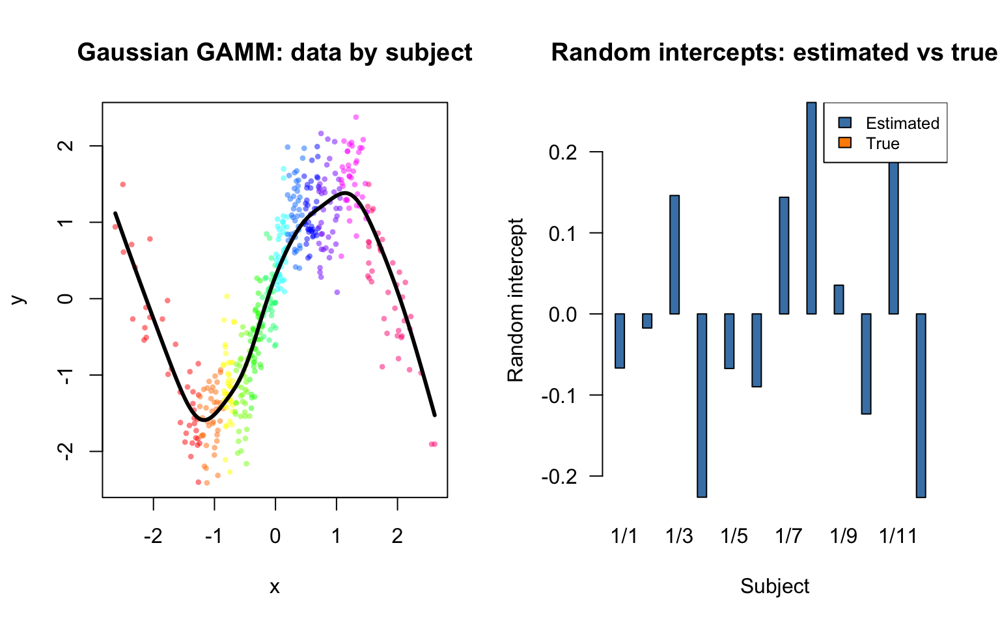
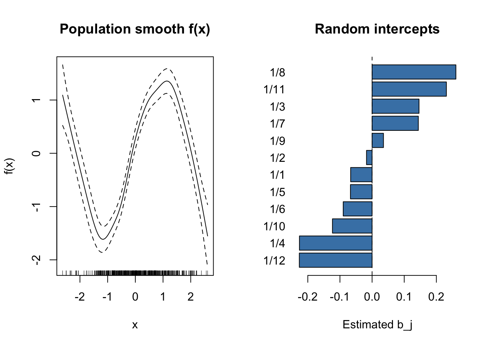
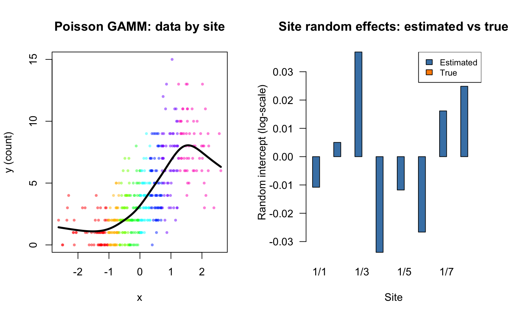
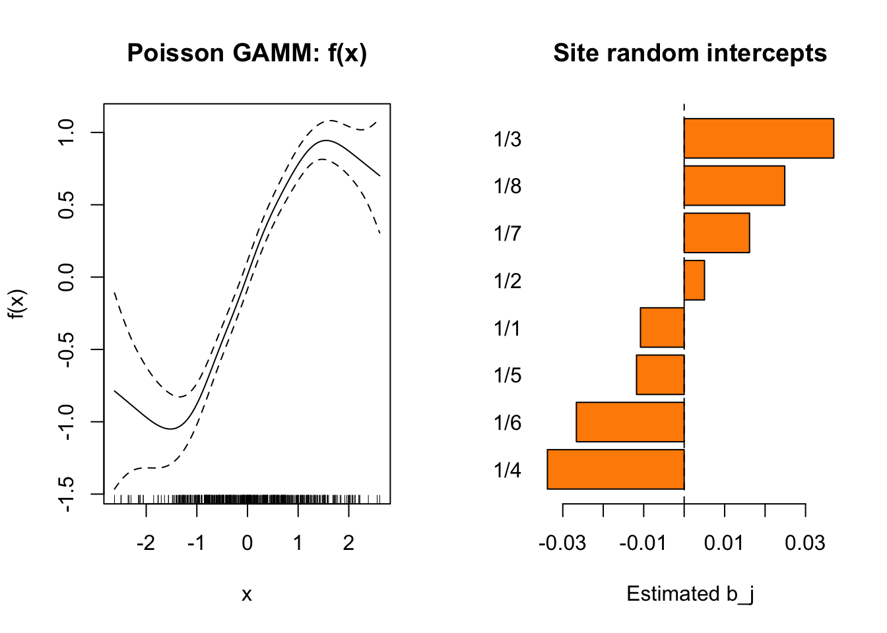

library(mgcv)Loading required package: nlmeThis is mgcv 1.9-3. For overview type 'help("mgcv-package")'.library(nlme)This vignette shows the R equivalent of the GAMM models fit in 10_gamm.qmd, using mgcv::gamm() which internally delegates to nlme::lme() for Gaussian models and penalized quasi-likelihood (PQL) for non-Gaussian models.
library(mgcv)Loading required package: nlmeThis is mgcv 1.9-3. For overview type 'help("mgcv-package")'.library(nlme)dat <- read.csv("../data_gaussian_gamm.csv")
cat(sprintf("n = %d, subjects = %d\n", nrow(dat), length(unique(dat$subject))))n = 480, subjects = 12cat(sprintf("y range: [%.2f, %.2f]\n", min(dat$y), max(dat$y)))y range: [-2.41, 2.38]gamm()In mgcv, random effects are specified via the random= argument, not in the formula:
dat$subject <- factor(dat$subject)
m <- gamm(y ~ s(x, k = 15), random = list(subject = ~1), data = dat)
summary(m$gam)
Family: gaussian
Link function: identity
Formula:
y ~ s(x, k = 15)
Parametric coefficients:
Estimate Std. Error t value Pr(>|t|)
(Intercept) 0.02575 0.05950 0.433 0.665
Approximate significance of smooth terms:
edf Ref.df F p-value
s(x) 9.044 9.044 62.6 <2e-16 ***
---
Signif. codes: 0 '***' 0.001 '**' 0.01 '*' 0.05 '.' 0.1 ' ' 1
R-sq.(adj) = 0.854
Scale est. = 0.16874 n = 480re <- ranef(m$lme)$subject
cat("Random intercept estimates:\n")Random intercept estimates:for (lev in rownames(re)) {
cat(sprintf(" Subject %2s: b = %+.3f\n", lev, re[lev, 1]))
} Subject 1/1: b = -0.067
Subject 1/2: b = -0.017
Subject 1/3: b = +0.146
Subject 1/4: b = -0.226
Subject 1/5: b = -0.067
Subject 1/6: b = -0.090
Subject 1/7: b = +0.144
Subject 1/8: b = +0.261
Subject 1/9: b = +0.035
Subject 1/10: b = -0.123
Subject 1/11: b = +0.231
Subject 1/12: b = -0.226vc <- VarCorr(m$lme)
print(vc) Variance StdDev
g = pdIdnot(Xr - 1)
Xr1 12.30976447 3.5085274
Xr2 12.30976447 3.5085274
Xr3 12.30976447 3.5085274
Xr4 12.30976447 3.5085274
Xr5 12.30976447 3.5085274
Xr6 12.30976447 3.5085274
Xr7 12.30976447 3.5085274
Xr8 12.30976447 3.5085274
Xr9 12.30976447 3.5085274
Xr10 12.30976447 3.5085274
Xr11 12.30976447 3.5085274
Xr12 12.30976447 3.5085274
Xr13 12.30976447 3.5085274
subject = pdLogChol(1)
(Intercept) 0.03817131 0.1953748
Residual 0.16873619 0.4107751sigma_re <- as.numeric(vc[rownames(vc) == "(Intercept)", "StdDev"])
sigma_res <- as.numeric(vc[rownames(vc) == "Residual", "StdDev"])
cat(sprintf("RE σ: %.4f (true: 0.6)\n", sigma_re))RE σ: 0.1954 (true: 0.6)cat(sprintf("Residual σ: %.4f (true: 0.4)\n", sigma_res))Residual σ: 0.4108 (true: 0.4)true_re <- tapply(dat$re_true, dat$subject, function(x) x[1])
cat(sprintf("Correlation of estimated vs true RE: %.4f\n",
cor(re[, 1], true_re)))Correlation of estimated vs true RE: 0.8319s(subject, bs="re")In mgcv, s(subject, bs="re") is the smooth-term equivalent of a random intercept:
m_gam <- gam(y ~ s(x, k = 15) + s(subject, bs = "re"),
data = dat, method = "REML")
cat(sprintf("Fitted values correlation (gamm vs gam+re): %.6f\n",
cor(fitted(m$lme), fitted(m_gam))))Fitted values correlation (gamm vs gam+re): 0.999996cat(sprintf("Scale (gamm): %.6f\n", m$gam$scale))Scale (gamm): 1.000000cat(sprintf("Scale (gam): %.6f\n", m_gam$scale))Scale (gam): 0.168889par(mfrow = c(1, 2))
# Scatter colored by subject with population smooth
subject_ids <- sort(unique(dat$subject))
n_subj <- length(subject_ids)
cols <- rainbow(n_subj, alpha = 0.5)
plot(dat$x, dat$y, col = cols[match(dat$subject, subject_ids)],
pch = 16, cex = 0.6, xlab = "x", ylab = "y",
main = "Gaussian GAMM: data by subject")
x_grid <- seq(min(dat$x), max(dat$x), length.out = 200)
pop_pred <- predict(m$gam, newdata = data.frame(x = x_grid))
lines(x_grid, pop_pred, col = "black", lwd = 3)
# Grouped bar: estimated vs true random intercepts
re_mat <- rbind(Estimated = re[, 1], True = true_re[rownames(re)])
barplot(re_mat, beside = TRUE, names.arg = rownames(re),
col = c("steelblue", "darkorange"), las = 1,
main = "Random intercepts: estimated vs true",
xlab = "Subject", ylab = "Random intercept")
legend("topright", c("Estimated", "True"),
fill = c("steelblue", "darkorange"), cex = 0.8)
par(mfrow = c(1, 2))
# Smooth effect
plot(m$gam, shade = TRUE, main = "Population smooth f(x)",
xlab = "x", ylab = "f(x)")
# Random effects
re_est <- re[, 1]
names(re_est) <- rownames(re)
barplot(sort(re_est), horiz = TRUE, las = 1,
main = "Random intercepts", xlab = "Estimated b_j",
col = "steelblue")
abline(v = 0, lty = 2)
dat2 <- read.csv("../data_poisson_gamm.csv")
dat2$site <- factor(dat2$site)
cat(sprintf("n = %d, sites = %d\n", nrow(dat2), length(unique(dat2$site))))n = 480, sites = 8For non-Gaussian families, gamm() uses PQL (penalized quasi-likelihood):
m2 <- gamm(y ~ s(x, k = 15), random = list(site = ~1),
family = poisson(), data = dat2)
Maximum number of PQL iterations: 20 iteration 1iteration 2iteration 3iteration 4iteration 5summary(m2$gam)
Family: poisson
Link function: log
Formula:
y ~ s(x, k = 15)
Parametric coefficients:
Estimate Std. Error t value Pr(>|t|)
(Intercept) 1.14153 0.03389 33.68 <2e-16 ***
---
Signif. codes: 0 '***' 0.001 '**' 0.01 '*' 0.05 '.' 0.1 ' ' 1
Approximate significance of smooth terms:
edf Ref.df F p-value
s(x) 5.516 5.516 69.32 <2e-16 ***
---
Signif. codes: 0 '***' 0.001 '**' 0.01 '*' 0.05 '.' 0.1 ' ' 1
R-sq.(adj) = 0.584
Scale est. = 1 n = 480re2 <- ranef(m2$lme)$site
true_re2 <- tapply(dat2$re_true, dat2$site, function(x) x[1])
cat(sprintf("RE correlation with truth: %.4f\n",
cor(re2[, 1], true_re2)))RE correlation with truth: 0.6505par(mfrow = c(1, 2))
# Scatter colored by site with population smooth
site_ids <- sort(unique(dat2$site))
n_sites <- length(site_ids)
cols2 <- rainbow(n_sites, alpha = 0.5)
plot(dat2$x, dat2$y, col = cols2[match(dat2$site, site_ids)],
pch = 16, cex = 0.6, xlab = "x", ylab = "y (count)",
main = "Poisson GAMM: data by site")
x_grid2 <- seq(min(dat2$x), max(dat2$x), length.out = 200)
pop_pred2 <- predict(m2$gam, newdata = data.frame(x = x_grid2), type = "response")
lines(x_grid2, pop_pred2, col = "black", lwd = 3)
# Grouped bar: estimated vs true random effects
re2_mat <- rbind(Estimated = re2[, 1], True = true_re2[rownames(re2)])
barplot(re2_mat, beside = TRUE, names.arg = rownames(re2),
col = c("steelblue", "darkorange"), las = 1,
main = "Site random effects: estimated vs true",
xlab = "Site", ylab = "Random intercept (log-scale)")
legend("topright", c("Estimated", "True"),
fill = c("steelblue", "darkorange"), cex = 0.8)
par(mfrow = c(1, 2))
plot(m2$gam, shade = TRUE, main = "Poisson GAMM: f(x)",
xlab = "x", ylab = "f(x)")
re2_est <- re2[, 1]
names(re2_est) <- rownames(re2)
barplot(sort(re2_est), horiz = TRUE, las = 1,
main = "Site random intercepts", xlab = "Estimated b_j",
col = "darkorange")
abline(v = 0, lty = 2)
| Feature | Julia (GAM.jl) | R (mgcv) |
|---|---|---|
| Random intercept | gamm(@gamm_formula(y ~ s(x) + (1\|g)), df) |
gamm(y ~ s(x), random=list(g=~1), data=df) |
@formula path |
gamm(@formula(y ~ cr(x, 10) + (1\|g)), df) |
— |
re() shorthand |
gamm(@formula(y ~ cr(x, 10) + re(g)), df) |
— |
| Equivalent GAM | gam(@formulak(y ~ s(x) + s(g, bs=:re)), df) |
gam(y ~ s(x) + s(g, bs="re"), data=df) |
| Non-Gaussian | gamm(..., Poisson()) |
gamm(..., family=poisson()) |
| Extract RE | ranef(m) |
ranef(m$lme) |
| Variance components | VarCorr(m) |
VarCorr(m$lme) |
| Prediction | predict(m, newdata) |
predict(m$gam, newdata) |
Formula syntax: Julia puts random effects in the formula with (1|group), matching lme4/MixedModels.jl conventions. R mgcv uses a separate random= argument.
Fitting algorithm: GAM.jl treats random effects as smooth terms with identity penalty (via PIRLS+REML). R’s gamm() converts smooths to mixed-model form and delegates to nlme::lme() (Gaussian) or uses PQL (non-Gaussian).
Result structure: Julia returns a GammModel with direct access. R returns a list with $gam (the GAM component) and $lme (the mixed model component).
Interface: Julia gamm() returns a single model object. R requires navigating m$gam vs m$lme for different aspects of the fit.